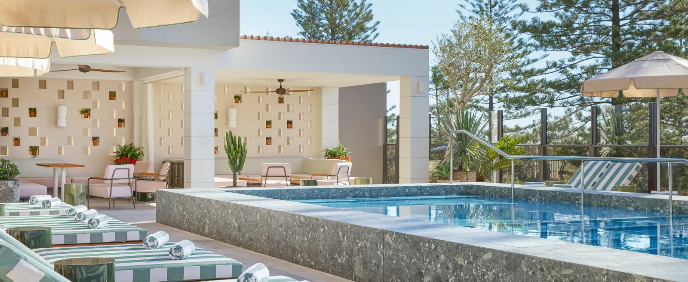
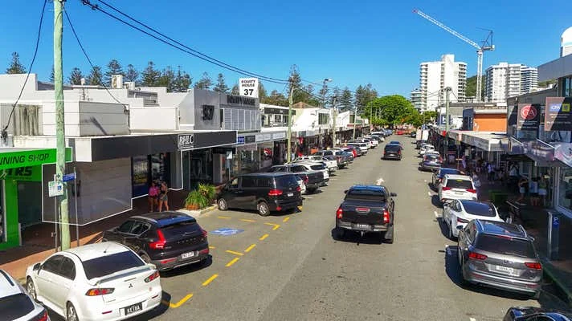
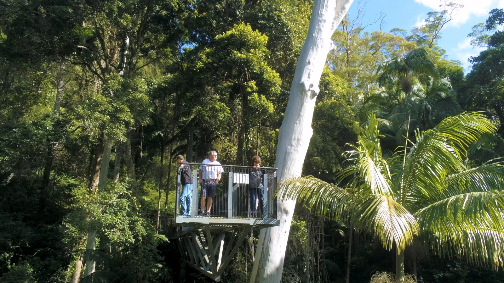
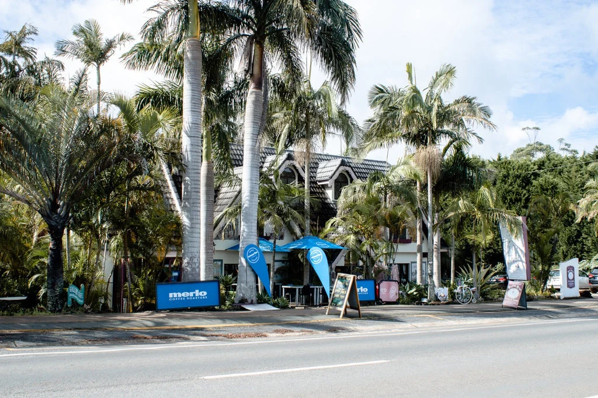

11월 11일
대한항공 KE407 출발 · 프레스티지사진 더 보기수요일
인천 출발
날짜 링크저녁 7시 40분, 인천에서 대한항공 KE407편으로 출발합니다. 프레스티지석에서 휴식을 취하고 다음 날 아침 브리즈번에 도착합니다.
- 16:30인천공항 · 체크인과 라운지
- 비행 9시간 40분
- 19:40대한항공 KE407 출발 · 프레스티지
숙박기내
/whitehaven-beach-aerial-of-shorelines.jpg?width=1600&height=900&fit=crop)
11월 11일 수요일에 떠나 21일 토요일에 돌아오는 호텔 9박·전체 11일 일정입니다. 늦봄의 골드코스트 3박, 해밀턴 아일랜드 3박, 브리즈번 3박으로 지역을 나눕니다. 숙소는 네 곳이며 골드코스트에서는 골프를 위해 한 번 이동합니다.
골프는 The Pines, Dent Island, Nudgee에서 각각 한 번을 목표로 합니다. The Pines 티타임을 먼저 확인한 뒤 숙박을 확정합니다. 나머지는 숲길·배스하우스·미술관·강변 산책을 조합하되, 도착일 코알라 체험과 섬의 경비행기 등은 선택으로 남깁니다.
오전 야외활동을 우선하고 오후 휴식 시간을 확보하되, 실제 투어 출항과 날씨에 따라 순서를 바꿉니다. 지역별로 3박씩 머물며 활동과 휴식의 균형을 조정하기 좋은 안입니다.
/catseye-beach-landscape.jpg?w=1600&fit=crop) 사진 더 보기
사진 더 보기저녁 7시 40분, 인천에서 대한항공 KE407편으로 출발합니다. 프레스티지석에서 휴식을 취하고 다음 날 아침 브리즈번에 도착합니다.

 Paddock Bakery 조식 · 벌리헤즈
Paddock Bakery 조식 · 벌리헤즈 선택: 커럼빈 코알라 촬영 · 상품 조건 확인
선택: 커럼빈 코알라 촬영 · 상품 조건 확인
LiTO 점심 · 호텔 Ground floor오전 6시 20분 브리즈번에 도착한 뒤 입국심사·수하물 수취·검역을 마칩니다. 차량에 합류해 벌리헤즈로 이동하고, 9시 이후 Paddock Bakery에서 늦은 조식을 먹습니다. 입국 상황에 따라 첫 방문 시각은 유동적입니다.
오전에는 벌리 헤드 산책 또는 커럼빈 생추어리 중 하나를 고릅니다. 산책로 1.2km는 편도 거리이므로 왕복은 약 2.4km입니다. 커럼빈을 선택하면 별도 입장권과 사진 체험을 예약하고 입구부터 체험장까지 최소 30분을 확보합니다. 코알라 안기는 사육사 판단에 따라 다른 촬영 방식으로 바뀔 수 있습니다.
LiTO에서 늦은 점심을 먹은 뒤 15시부터 Mondrian 체크인을 하고 쉽니다. 저녁 산책과 Rick Shores 식사는 컨디션에 맞춰 즐깁니다. 도착이 늦거나 피곤하면 오전 관광을 모두 생략해도 좋습니다.



 Greenhouse · 입욕 90분 후 점심, 총 2.5~3시간
Greenhouse · 입욕 90분 후 점심, 총 2.5~3시간 벌리 파빌리온 선셋 한잔
벌리 파빌리온 선셋 한잔 SHŌTŌ 디너
SHŌTŌ 디너탬버린 마운틴 Skywalk는 9시 30분 개장에 맞춰 방문합니다. 약 50분 동안 열대우림의 수관과 계곡을 바라본 뒤, 여유가 있으면 Gallery Walk의 공방과 카페에 들릅니다.
다음 목적지 Greenhouse는 Tallebudgera Valley에 있습니다. 산에서 별도 계곡으로 이동하는 경로이므로 출발 전 실제 주행시간을 확인하고, 13시 입욕을 예약한다면 12시 45분까지 도착합니다. 이동이 길어지면 Gallery Walk를 생략합니다. 입욕 90분과 이후 2코스 점심, 환복을 합쳐 약 2시간 30분~3시간을 비워 둡니다.
오후 늦게 호텔로 돌아와 쉽니다. 벌리 파빌리온 방문은 선택으로 두고, 저녁에는 야키토리와 핸드롤을 즐기는 SHŌTŌ를 예약합니다.


 마리나 빌리지 점심 · Rivers & Co
마리나 빌리지 점심 · Rivers & Co 체크인 · 라군 풀 휴식
체크인 · 라군 풀 휴식 The Fireplace 디너 · 6코스 데귀스타시옹
The Fireplace 디너 · 6코스 데귀스타시옹이른 조식과 체크아웃을 마치고 7시 30분 출발을 목표로 생추어리 코브로 이동합니다. 리조트에 짐을 맡긴 뒤 The Pines 9시 티타임을 요청합니다. 회원제 코스의 투숙객 패키지는 희망 시각을 보장하지 않으므로, 체크인 당일 오전 플레이와 티타임을 서면 확인한 뒤 숙소를 확정합니다.
라운드 후 Rivers & Co에서 점심을 먹고 15시 이후 체크인합니다. 오후에는 약 1에이커 규모의 라군 풀에서 쉬며, 마사지가 필요하면 별도 업체·장소·요금을 확인해 예약합니다. Destino 와인 바는 선택 일정입니다. 저녁은 The Fireplace 6코스로, 코스 메뉴는 최소 24시간 전에 신청합니다.
/dine/long-pavilion/qualia-resort-long-pavilion-entrance-sea-views.jpg?w=1600&fit=crop) 롱 파빌리온 디너조식 · 체크아웃
롱 파빌리온 디너조식 · 체크아웃오전 6시 30분에 조식, 7시 15분 체크아웃 후 7시 30분 출발을 목표로 브리즈번 국내선 공항으로 이동합니다. 주행 약 55분 외에 교통과 수속 여유를 두고 8시 30분 공항 도착을 계획합니다. 10시 15분 해밀턴행은 실제 편명과 운항을 확인한 뒤 확정합니다.
정오 무렵 해밀턴에 도착하면 짐을 찾고 리조트 차량으로 이동합니다. Pebble Beach에서 점심을 먹은 뒤 14시부터 체크인합니다. 오후는 프라이빗 데크에서 쉬고, 저녁은 Long Pavilion에서 즐깁니다.

/Dine/Pebble-Beach/qualia-resort-Pebble-Beach-pool-sunlounges.jpg?w=1600&fit=crop)

 Dent Island 18홀 · 페리·티타임 예약 확인
Dent Island 18홀 · 페리·티타임 예약 확인/spa/spa-qualia/qualia-resort-spa-qualia-day-spa-entry.jpg?w=1600&fit=crop) 선택: Spa qualia 커플 트리트먼트 · 90분
선택: Spa qualia 커플 트리트먼트 · 90분 coca chu 디너 · 캐츠아이 비치
coca chu 디너 · 캐츠아이 비치예약한 티타임에 연결되는 골프 페리를 타고 해밀턴 아일랜드 골프클럽으로 건너갑니다. 페리 출발과 티오프는 서로 다른 시각이며, 아래 오전 시간은 예약 전 목표입니다. 18홀을 마친 뒤 클럽하우스에서 점심을 먹고 돌아옵니다.
오후에는 Spa qualia 커플 트리트먼트와 일몰 요트 투어 중 하나를 선택합니다. 두 체험을 모두 원하면 다른 날의 빈 시간으로 나눠 예약합니다. 저녁은 캐츠아이 비치 앞 coca chu에서 동남아시아 요리를 즐깁니다. 음주 후 이동은 리조트 차량 서비스를 이용합니다.
 힐 인렛·화이트헤이븐 · 출항시각 확인
힐 인렛·화이트헤이븐 · 출항시각 확인/Experiences/Heart-Reef/saltywings-qualia-resort-Heart-Reef-Heart-Island-Great-Barrier-Reef.jpg?w=1600&fit=crop) 선택: 하트리프 경비행기 · 상품·날씨 확인페블 비치 디너 · 4코스
선택: 하트리프 경비행기 · 상품·날씨 확인페블 비치 디너 · 4코스힐 인렛 전망대와 화이트헤이븐 비치를 함께 둘러보는 반나절 상품을 우선 예약합니다. 보트로 이동한 뒤 숲길을 걸어 전망대에 올라 모래와 바다가 만드는 무늬를 내려다봅니다. 조수에 따라 오전·오후 출항이 달라지므로, 아래 시간은 오전편을 확보했을 때의 예시입니다.
오전 투어를 마치고 돌아오면 점심과 휴식 시간을 갖습니다. 하트리프 경비행기는 선택 일정으로, 오전 보트와 당일 비행이 모두 가능한 경우에만 예약합니다. 보트가 오후편이거나 날씨가 좋지 않으면 비행을 생략하고 리조트에서 쉽니다. 저녁에는 숙박 패키지에 포함된 Pebble Beach의 4코스 디너를 즐깁니다.

 선택: 패시지 피크 아침 하이킹 · 약 2.5시간
선택: 패시지 피크 아침 하이킹 · 약 2.5시간 The Calile 체크인
The Calile 체크인 스토리브리지 트와일라잇 클라임 · 2시간
스토리브리지 트와일라잇 클라임 · 2시간원하시면 일출 후 6시부터 Passage Peak 하이킹을 합니다. 편도 약 2.7km·1시간에 계단과 오르막이 있어 휴식 포함 약 2시간 30분을 확보합니다. 날씨와 현장 개방을 확인하며, 피곤하면 리조트 조식과 휴식으로 대신합니다.
체크아웃 후 브리즈번행 낮 비행기를 타고, 수하물과 차량 픽업 여유를 두어 15시 30분~16시 Calile 도착을 목표로 합니다. 스토리브리지 클라임은 예약시각 20분 전까지 도착해야 하므로 항공 지연 시 생략하거나 다른 날로 변경합니다. 저녁에는 호텔 풀 데크 층(Level 1)의 Hellenika에서 그리스 요리를 즐깁니다.

 강변 산책 · 약 5km 목표, 경로 확인
강변 산책 · 약 5km 목표, 경로 확인 Goodside 브런치 · 피시 레인
Goodside 브런치 · 피시 레인 GOMA 현대미술관
GOMA 현대미술관아침에는 시티 보타닉 가든에서 캥거루 포인트 보행교를 건너 강변을 따라 사우스뱅크로 걷습니다. 약 5km를 목표로 하는 산책으로, 절벽 위·아래 연결 구간과 실제 거리·계단 여부를 지도에서 확인합니다. 컨디션에 따라 구간을 줄이고, Goodside에서 브런치 후 GOMA를 관람합니다. 일반 입장은 무료이며 일부 특별전은 별도 요금입니다.
오후에는 제임스 스트리트에서 쇼핑하거나 호텔에서 쉰 뒤 Lan 배스하우스 90분을 이용합니다. 저녁의 +81 Sushi Kappo는 실제 예약 세션을 먼저 확보합니다. 아래는 20시 30분 세션을 예약했을 때의 예시로, 17시 30분만 가능하면 배스하우스 시간을 앞당기거나 생략하고 Bar Miette도 다른 시간으로 옮깁니다.


 Nudgee Kurrai 코스 라운드 · 18홀
Nudgee Kurrai 코스 라운드 · 18홀 Fountainhead Winehouse · 뉴스테드호텔 풀 데크 휴식 · 짐 정리
Fountainhead Winehouse · 뉴스테드호텔 풀 데크 휴식 · 짐 정리마지막 아침은 Nudgee 골프클럽 Kurrai 코스의 7시 30분 티타임을 목표로 합니다. 방문객에게 가능한 코스와 예약시각을 확인하고, 불가하면 다른 코스나 늦은 시각으로 바꿉니다. 라운드와 점심 뒤 Fountainhead Winehouse에서 와인을 맛보거나 호텔로 바로 돌아와 쉽니다.
마지막 저녁은 호주의 제철 재료를 코스로 선보이는 Exhibition입니다. 다음 날 이른 공항 출발에 맞춰 식사 종료시간을 확인하고, 오후에는 짐 정리 시간을 남겨 둡니다.
The Calile 출발대한항공 KE408 출발 · 프레스티지오전 5시 10분에 호텔을 출발해 5시 40분까지 브리즈번 국제선 터미널 도착을 목표로 합니다. 국제선 출발 3시간 전 도착 기준이며, 차량 픽업 시각은 당일 경로에 맞춰 확정합니다. 8시 40분 KE408편으로 출발해 같은 날 저녁 6시 5분 인천에 도착합니다.
사진 더 보기The Pines 골프 패키지를 이용하기 위한 1박입니다. 원하는 숙박일에도 티타임이 없을 수 있으므로 체크인 당일 오전 라운드를 먼저 확인합니다. 약 1에이커 라군 풀에서 쉬며, 마사지 등 트리트먼트는 장소·예약·요금이 별도입니다.
/Stay/Leeward/qualia-resort-Leeward-Pavilion-Whitsunday-views.jpg?w=1600&fit=crop) 사진 더 보기
사진 더 보기섬 북쪽의 만 16세 이상 리조트. Leeward Pavilion의 프라이빗 데크에서 산호해를 바라봅니다. 3박 골프 패키지는 두 분 각 18홀 1회·조식·디너 1회 포함 조건입니다. 버기는 운전면허와 연령 조건이 있으며, 24시간 리조트 차량 서비스도 이용할 수 있습니다.
사진 더 보기사진 더 보기사진 더 보기사진 더 보기사진 더 보기사진 더 보기사진 더 보기사진 더 보기사진 더 보기사진 더 보기사진 더 보기사진 더 보기사진 더 보기사진 더 보기사진 더 보기사진 더 보기사진 더 보기| 국제선 항공 — 대한항공 프레스티지 왕복 | A$9,510 | 약 970만 원 |
| 국제선 2인 참고 운임 · 2026년 10월 자료, 발권 전 재조회 · 원화 9,701,400원 기준 환산 | ||
| 국내선 항공 — 브리즈번 ↔ 해밀턴 아일랜드 왕복 | A$1,000 | 약 102만 원 |
| 2인 추정 · 편명·수하물·골프백·변경 조건 확인 후 확정 | ||
| 숙박 9박 | A$10,972 | 약 1,119만 원 |
| Mondrian 2×700 + InterContinental 1,074 + qualia 6,188 + Calile 3×770 · 패키지 최저가와 숙박 추정가를 합산, 지정일 견적 미확정 | ||
| 골프 — Nudgee | A$300 | 약 31만 원 |
| The Pines·Dent Island 두 분 각 1회는 해당 숙박 패키지 조건 · 골프 카트·클럽·골프화 포함 여부 확인, 장비 대여는 별도 산출 | ||
| 액티비티·체험 | A$3,700 | 약 377만 원 |
| 힐 인렛·선택 경비행기·일몰 요트 또는 스파·Skywalk·배스하우스·선택 코알라·클라임의 예약 전 예산 여유값 · 선택 체험 확정 후 다시 계산 | ||
| 식사 | A$4,000 | 약 408만 원 |
| 별도 저녁 8회·점심·음료·패키지 외 조식 · +81 기본 2인 A$900, 주말 할증 확인 · Pebble Beach 디너 1회는 숙박 포함 | ||
| 현지 이동 — 기사 포함 차량·공항 픽업 예산 | A$3,000 | 약 306만 원 |
| 11/12~15·18~21의 차량 이동 및 공항 픽업을 견적 범위에 포함 요청 · 연료·통행료·주차·대기·골프백 조건 미확정, 확정 견적 아님 | ||
| 입국허가·여행자보험·예비비 예산 | A$1,190 | 약 121만 원 |
| 합계 · 두 분 | A$33,672 | 약 3,435만 원 |
2026년 10월 19일 검토한 여행 제안입니다. 예약 완료를 확인하는 자료가 없으므로 항공편, 객실, 티타임, 레스토랑과 투어는 모두 예약 전 확인이 필요합니다. 적힌 시각은 예약된 일정표가 아니라 동선을 검토하기 위한 제안 시각입니다.
모든 시각은 해당 지역의 현지 시각입니다. 11월에는 시드니·멜버른이 한국보다 2시간, 퀸즐랜드가 1시간 빠릅니다. 주를 이동할 때는 현지 출발·도착 시각과 실제 비행시간을 구분해 주세요. 차량 이동시간은 교통 상황에 따른 예상치이며 수하물 수취·픽업 대기·주차 시간은 별도입니다.
해변·섬·도시에서 각각 3박을 보내며 서로 다른 풍경을 만납니다. 골프와 주요 투어를 먼저 예약하고, 첫날 관광과 오후 체험을 조절해 두 분에게 맞는 여유를 만드는 안입니다.
사진 더 보기